| Component | Status | Where |
|---|---|---|
| Fine-tuned mBERT intent detection (31 intents) | Implemented | intent_detection/, dialog_manager/intent_router.py |
| Dialogue Manager | Implemented | dialog_manager/ |
| Appointment Backend (validation, booking, leave) | Implemented | appointment_backend/ |
| Firebase Firestore persistence | Implemented composite indexes declared, not deployed | firebase/, firestore.indexes.json |
| Ollama judge / response generator and response validator | Implemented | ollama_judge/ |
| ElevenLabs speech-to-text (realtime) | Implemented measured with synthetic callers | speech/stt.py |
| ElevenLabs text-to-speech (streaming) | Implemented measured | speech/tts.py |
| Microphone voice mode | Implemented tested with a virtual microphone | voice_app.py |
| Call endpoint for a telephony bridge | Implemented | api/voice_ws.py (/voice/call) |
| Asterisk / SIP telephony | Not implemented | Future work |
| Doctor Dashboard | Implemented | Dashboard/, api/dashboard.py |
| SuperAdmin Dashboard (single clinic) | Implemented | Dashboard/, api/admin.py |
| Appointment statistics | Implemented | appointment_backend/statistics.py |
| Doctor leave with automatic cancellation | Implemented | cancellation_service.py |
| Patient notifications | Queued, not delivered | firebase/notification_service.py |
| Dashboard authentication and roles | Prototype | api/auth.py |
Booking a doctor's appointment in Pakistan usually still means a phone call to a receptionist: the line is busy at peak hours, nobody answers after hours, and a receptionist juggling calls, walk-ins and paper diaries makes mistakes - double bookings, wrong days, missed cancellations. The AI Voice Appointment System automates that phone conversation. A patient speaks as they naturally would - English, Urdu, Roman Urdu, or a mixture such as “Mje docter ke pas jana h” - and the system works out what they want, asks only for what is missing, checks the doctor's real diary, and books, moves or cancels the appointment.
How it works. Speech is transcribed by ElevenLabs Scribe v2 Realtime. A fine-tuned multilingual BERT (mBERT) classifies each utterance into one of 31 intents (test accuracy 0.898, macro-F1 0.836 on 354 held-out sentences). A rule-based Dialogue Manager keeps the conversation state, fills the doctor/date/time slots, asks for confirmation and absorbs corrections. An Appointment Backend applies the clinic's rules and writes to Firebase Firestore inside a transaction, so a slot cannot be double-booked. Only then does a local language model (Ollama, llama3.2) phrase the reply; a response validator rejects any wording whose facts differ from the database, and the approved sentence is spoken by ElevenLabs streaming TTS.
Management. Doctors use a web Doctor Dashboard for their day's appointments, patients, weekly hours, leave, statistics and password. The clinic administrator uses a SuperAdmin Dashboard to add, edit, deactivate and remove doctors, set their usernames and passwords, manage leave, see and act on every appointment, edit the one clinic's details, and read clinic-wide and per-doctor statistics. It is a single-clinic system.
Status. Everything above is implemented and tested: 595 automated tests (582 passed, 13 live-service tests skipped, 0 failed) and 110 browser checks of the dashboards (all passed). Speech was measured against the real ElevenLabs service with synthetic callers: a caller who stops speaking hears the agent start after a median of 2.5 s (3.0-3.3 s in the microphone mode, where the language model words every reply). Not implemented: the telephone line itself (Asterisk/SIP) and the delivery of patient notifications. A real person speaking into the microphone has not yet been measured.
Main contribution. A complete, working appointment assistant for Pakistani Urdu and Roman Urdu speech in which the machine-learning components decide what the caller means and how the reply is worded, while every fact the caller hears and every change to the diary comes from deterministic, tested code and the database.
Most clinics in Pakistan take appointments by telephone and keep them in a paper register or a spreadsheet. This causes familiar problems:
Callers mix languages freely. The same request arrives as “I want an appointment”, “مجھے اپائنٹمنٹ چاہیے”, “Mujhe appointment chahiye” or “Mje docter ke pas jana h”, with non-standard Roman Urdu spelling that keyword systems and English-only models handle poorly.
Build a system that can hold an appointment conversation with a patient in English, Urdu, Roman Urdu or mixed speech; understand what they want even when it is phrased informally; collect the details it needs; apply the clinic's real schedule and rules without ever inventing availability or confirming something that did not happen; and give the clinic's doctors and administrator a way to manage the same data.
A pipeline in which each stage has one job: speech-to-text produces the caller's words; mBERT classifies the intent; the Dialogue Manager decides the next step; the Appointment Backend performs any operation against Firestore; the LLM phrases the result; the validator checks the phrasing against the result; text-to-speech speaks it. Two web dashboards read and change the same Firestore data through the same backend rules.
| Objective | Outcome |
|---|---|
| Voice-based appointment booking, cancellation and rescheduling | Met through the microphone mode and the call endpoint; not over a phone line |
| Multilingual intent detection (English, Urdu, Roman Urdu, mixed) | Met fine-tuned mBERT, 31 intents |
| Natural multi-turn conversation with confirmation and corrections | Met Dialogue Manager |
| Automated, rule-checked appointment management with no double bookings | Met validation gates and a Firestore transaction |
| Doctor schedule and leave management | Met both dashboards |
| Central SuperAdmin control of a single clinic | Met |
| Real-time shared database | Met Firebase Firestore |
| Spoken replies generated from verified data | Met Ollama + validator + ElevenLabs TTS |
| Telephone deployment (Asterisk/SIP) | Not met future work |
| User | In scope (implemented) |
|---|---|
| Patient (voice or text) | Book, cancel and reschedule an appointment; check their appointment; ask a doctor's fee, qualification, specialisation or general information; ask a doctor's availability on a day; ask the clinic's address and timings; greetings, thanks, goodbye, “repeat that”, help; emergency escalation. |
| Doctor (Doctor Dashboard) | Today's appointments and who is due now; all own appointments (book, move, cancel, complete); own patients; own statistics; weekly working hours; leave (blocking dates cancels that day's appointments); own profile (not clinic details or username); own password; alert preferences; notifications queued for their patients. |
| SuperAdmin (SuperAdmin Dashboard) | Add, edit, activate/deactivate, remove (archive) and restore doctors; set a doctor's username and password; own password; any doctor's working hours and leave, with a preview of affected patients; every appointment in the clinic (cancel, move, complete); the clinic's name, address, city and phone; clinic-wide and per-doctor statistics. |
| Not in scope | Several clinics; payments; medical records; SMS or call delivery of notifications (records are queued only); the telephone line (Asterisk/SIP). |
Every entry below is used by the current code; the versions are those installed on the development machine.
| Category | Technology |
|---|---|
| Languages | Python 3.12 (backend, AI, speech); JavaScript, HTML and CSS (dashboards) |
| Intent detection | Fine-tuned mBERT (bert-base-multilingual-cased) with PyTorch 2.14 (CUDA 12.6) and Hugging Face Transformers 5.15 |
| Speech-to-text | ElevenLabs Scribe v2 Realtime (WebSocket, websockets 15.0.1); Scribe v2 for whole recordings |
| Text-to-speech | ElevenLabs streaming TTS, model eleven_v3_conversational (over httpx 0.28.1) |
| Language model | Ollama 0.34.4 running llama3.2 (3B) locally |
| Backend | FastAPI 0.141, Uvicorn 0.52, Pydantic 2.13, python-dotenv |
| Database | Google Cloud Firestore through the Firebase Admin SDK 7.5 |
| Microphone and speaker | sounddevice 0.5.6 (PortAudio) |
| Dashboards | Plain HTML, CSS and JavaScript served by the API - no framework, no build step |
| Authentication | Own token sessions in the API; passwords hashed with PBKDF2-HMAC-SHA256 |
| Data and evaluation | pandas, NumPy, scikit-learn, Matplotlib |
| Testing | Python unittest; headless Google Chrome driven from Node.js for browser checks; pypdf |
| Version control | Git and GitHub |
| Telephony | Not implemented (Asterisk/SIP planned) |
Hardware used for development, training and every measurement in this report: a desktop PC with an NVIDIA GeForce GTX 1660 SUPER (6 GB), on a network in Pakistan, with the free ElevenLabs plan.
One caller turn passes through every stage in order. The stages communicate by ordinary function calls inside one Python process, except for the three external services: ElevenLabs (STT over a WebSocket, TTS over HTTPS), Ollama (HTTP on the same machine) and Firestore (the Firebase Admin SDK).
| Component | Input → output | Code |
|---|---|---|
| Call orchestration | caller audio → committed transcripts; reply text → audio; decides when a turn happens, never what is said | speech/call.py |
| Speech-to-text | audio → partial and committed transcripts | speech/stt.py |
| Intent router | text → mBERT label, confidence, canonical intent, band | dialog_manager/intent_router.py |
| Dialogue Manager | intent + entities + session state → action, slots, reply template, backend result | dialog_manager/dialog_manager.py |
| Appointment Backend | booking request → OperationResult (success, data or error code) | appointment_backend/ |
| Firestore services | one service per collection | firebase/ |
| Voice pipeline | glues the stages; renders the reply in the caller's language; calls the judge | voice_pipeline.py |
| Judge and validator | result + template → approved sentence | ollama_judge/ |
| Text-to-speech | approved sentence → streamed audio | speech/tts.py |
The language model is the only component that can make things up, so it is given no authority. By the time it runs, the appointment has already been booked or refused by deterministic code and the result is in Firestore. The model only chooses words, and the validator compares those words with the result: a time, date, doctor or appointment ID that is not in the result - or a claim of success after a failure - rejects the sentence, and the Dialogue Manager's own template is spoken instead. If Ollama is unavailable, the templates are used and the call continues.
The browser never talks to Firebase and holds no credential or database address: it only calls the API with a session token. Writes that change appointments - booking, cancelling, moving, completing, leave - go through the same Appointment Backend as the voice assistant, so a doctor cannot bypass a rule the assistant has to follow. Because both paths use one Firestore database, a booking made by voice appears in the dashboard at its next 30-second refresh.
The system serves exactly one clinic, configured by CLINIC_ID
(default C001):
PATCH /admin/clinic). A doctor who tries to
set a clinic field on their own profile is refused with 403 clinic_readonly.POST /admin/clinic/consolidate.Speech is a layer around the text pipeline: it turns audio into the
caller's words and the approved reply into audio, and changes nothing in
between. The object that runs a call, VoiceCall (speech/call.py),
is the same whether the audio comes from a microphone or, in future, a
telephone bridge.
| Aspect | Implementation |
|---|---|
| Purpose | Turn the caller's speech into text for mBERT. |
| Model | scribe_v2_realtime over a WebSocket for calls; scribe_v2 (batch) for whole recordings. |
| Input audio | ulaw_8000 (telephone audio, sent as is) or pcm_16000 (microphone), in 100 ms chunks. |
| Languages | language_code=ur with optional secondary languages. Urdu is returned in Urdu script and English words in Latin script, as spoken - nothing is translated. Roman Urdu speech is Urdu speech; it comes back mostly in Urdu script, which mBERT was trained on. |
| Turn-taking | A local speech gate holds back silence before the caller speaks (not paid for). ElevenLabs commits the sentence after 0.8 s of silence. Only committed transcripts go to mBERT; partial transcripts are displayed and used to notice the caller interrupting. |
| Errors | Timeouts, rate limits, server errors and dropped connections are retried a bounded number of times; a dropped session is reopened (at most twice per call) and the sentence in progress is re-sent. ElevenLabs closes a session after ~15 s without audio (measured: 15.3 s), so 100 ms of silence is sent after 5 s idle. An empty transcript is never sent to mBERT; after two in a row the caller hears “Maazrat, mujhe clear sunai nahi diya. Dobara bol dein.” |
| Security | The API key is read from .env and sent only in a request header; the websockets library's debug log, which prints headers, is held at INFO (a test caught it leaking the key). |
Measured (29 September 2026, real ElevenLabs, synthetic caller voice,
docs/VOICE.md section 9): 11 of 12 checks passed - ten
sentences, of which nine were transcribed well enough for mBERT to find the
right intent, plus two seconds of silence and of line noise, which correctly
produced no transcript. The nine include “Mje docter ke pas jana h”
(“جی، doctor کے پاس جانا ہے۔” → book_appointment); the
failure was “fee kitni” heard as “فکت نہیں”. The committed transcript arrived 1.5-1.8 s
after the caller stopped (0.8 s of that is the end-of-sentence pause); a session
connects in about 0.8 s. The synthetic caller also mis-heard time words
(“kal” → “Cole”, “kal ke liye” → “Calcutta”).
| Aspect | Implementation |
|---|---|
| Purpose | Speak the final, validated reply - exactly the pipeline's response, not rewritten (a test compares the synthesised text with each turn's reply). |
| Model | eleven_v3_conversational, chosen by measurement (below). Voice: the built-in “Sarah” voice; the free plan refuses Voice Library voices through the API (402 paid_plan_required). |
| Streaming | The /stream endpoint: audio is played as it arrives. ulaw_8000 for a phone line, pcm_22050 for the speaker. |
| Errors | Retried only before the first audio byte - never restarted mid-sentence. If TTS fails, the reply is still shown as text and the call continues; an appointment is never booked twice because speech failed (tested). |
| Cost | Only fixed phrases (greeting, farewell, apologies) are cached as audio. |
Measured: first audio after a median of 818 ms
(eleven_flash_v2_5) and 824 ms (eleven_v3_conversational),
11 sentences × 2 runs. Each sample was transcribed back: Flash turned
“4 baje” into “5 baje” and “available nahi” into
“unavailable nahi” - a changed time and a reversed meaning - where v3
Conversational was correct, and Flash v2.5 does not list Urdu. Pronunciation
of Roman Urdu by the English-trained “Sarah” voice has not been judged by a
listener.
python voice_app.py puts the computer's microphone and speaker in the
telephone line's place - the development stand-in until Asterisk/SIP exists.
Microphone (16 kHz PCM) → ElevenLabs STT → mBERT → Dialogue Manager → Appointment Backend → Firestore → Ollama wording → validator → ElevenLabs streaming TTS (22 kHz PCM) → Speaker
MICROPHONE_DEVICE, SPEAKER_DEVICE,
--list-devices). A missing, busy, muted or unplugged device is reported in
words, not a traceback; an unplugged microphone is waited for 30 s.
--mic-test shows the level against the speech threshold without sending anything.--ptt: SPACE to start, SPACE to stop).VOICE_BARGE_IN=true keeps
listening and uses the call's barge-in (tested with simulated audio only).--debug): transcript, intent and confidence,
dialogue action, database result, whether the model's wording was approved
or rejected and why, the spoken reply, and the time of every stage.Measured live with real ElevenLabs, mBERT, llama3.2 and the real
speaker, but a virtual microphone (a synthetic caller at real-time pace)
and the in-memory clinic: in 3 six-turn conversations every reply was spoken;
two conversations completed a booking by voice; one failed because “kal ke
liye” was transcribed as “Calcutta”. The critical sentence “Mje docter ke pas
jana h” was classified book_appointment in all three. Caller stops →
agent audio: median 3.05 s over 18 turns. Not yet tested: a person
speaking into the real microphone. Both microphones on the development
machine were opened and their levels measured, nothing more.
What exists is the interface a bridge would use: a WebSocket endpoint,
/voice/call (api/voice_ws.py), that accepts 8 kHz μ-law audio
(or 16-bit PCM), runs the full pipeline and sends back the agent's audio plus
stop_playback and hangup events. It is protected by a shared token
(VOICE_GATEWAY_TOKEN, or local connections only when unset) and is covered
by automated tests with simulated audio. An Asterisk bridge (for example ARI
External Media or AudioSocket) would forward the caller's audio to this socket
and play what comes back; docs/VOICE.md section 5 describes what it must do.
Callers mix English, Urdu script and Roman Urdu in one sentence and spell
Roman Urdu freely (“mujhe”, “mje”, “mujhy”). Multilingual BERT
(bert-base-multilingual-cased) was pre-trained on Wikipedia in 104
languages including Urdu and English, with one WordPiece vocabulary shared by
all of them, so a single model can read all three forms. It is small enough to
fine-tune on a 6 GB GPU and answers in about 8 ms per sentence on that GPU. The
cased variant is used because the text is kept as the caller said it.
Source (in Data/) | Rows | Notes |
|---|---|---|
dataset.csv | 405 | English/Roman Urdu queries with a parallel Urdu-script column; 9 coarse labels, 384 of them “book” |
dataset2.csv | 2,159 | 19 columns; 2,000 duplicated (text, intent) pairs |
dataset3.csv | 1,500 | English; 1,425 fully duplicated rows |
synthetic_intents.csv | 2,377 | Generated by generate_data.py for all 31 intents: includes 127 hand-written natural phrasings and STT-style variants, 507 Roman Urdu spelling variants, 38 booking-shaped emergencies and 159 boundary phrasings added after an audit |
After harvesting the parallel Urdu columns there were 8,346 rows; exact-duplicate removal left 3,461 unique sentences in 2,991 leakage-proof groups. By script: 1,242 Roman Urdu, 1,231 English, 987 Urdu script (and 1 Devanagari). Most sentences (2,374 of 3,461) come from the generated set - an honest limitation discussed in section 17.
Tokenization uses mBERT's own WordPiece tokenizer with a maximum length of 64 tokens (padded/truncated), which covers a spoken sentence.
| Setting | Value | Setting | Value |
|---|---|---|---|
| Base model | bert-base-multilingual-cased | Epochs | 20 (early stopping, patience 5) |
| Classifier | linear head, 31 outputs | Best epoch | 19 (validation macro-F1 0.8659) |
| Batch | 16, effective 32 (2-step accumulation) | Loss | cross-entropy with class weights (power 0.5) |
| Learning rate | 2e-5, 10 % warm-up | Precision | mixed (fp16) |
| Weight decay | 0.01 | Gradient clipping | 1.0 |
| Hardware | GTX 1660 SUPER, 6 GB | Time | ≈ 233 s per epoch |
Evaluated on 354 test sentences never seen in training
(intent_detection/outputs/, 14 September 2026 - the model in use).
| Metric | Macro | Weighted |
|---|---|---|
| Accuracy | 0.8983 | |
| Precision | 0.8680 | 0.9097 |
| Recall | 0.8404 | 0.8983 |
| F1-score | 0.8362 | 0.8937 |
Strongest intents (F1 1.00): change_date, change_doctor, greeting, doctor_unavailable and the patient-detail intents; book_appointment 0.97 on 148 sentences. Weakest: clinic_timing 0.40, goodbye 0.50 (recall 0.33), repeat_information 0.57, help 0.62, change_time 0.67, emergency 0.71 (recall 0.55). Most common confusions: change_time → reschedule (2 of 6), goodbye → repeat_information (2 of 6), cancel → book (2 of 8), emergency → book (2 of 11). Several intents have fewer than ten test sentences, so their scores move a lot with one sentence. The weak spots are covered by rules in the Dialogue Manager: an emergency safety net, and corrections for the confusions seen in live calls (section 7).
| Minimum confidence to accept | Sentences kept | Accuracy on kept |
|---|---|---|
| 0.50 | 98.3 % | 0.908 |
| 0.60 (used) | 97.7 % | 0.913 |
| 0.80 (used) | 93.8 % | 0.940 |
| 0.90 | 92.1 % | 0.951 |
Mean confidence was 0.983 on correct predictions and 0.807 on wrong ones, which is why confidence alone cannot catch every error.
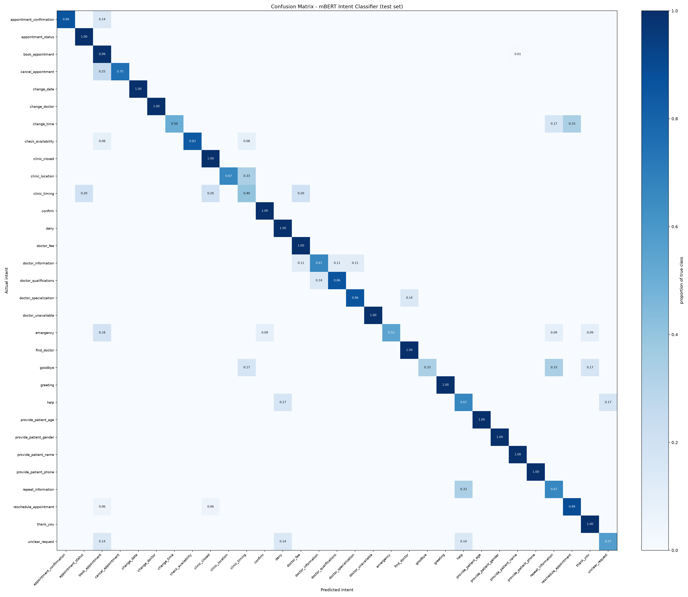
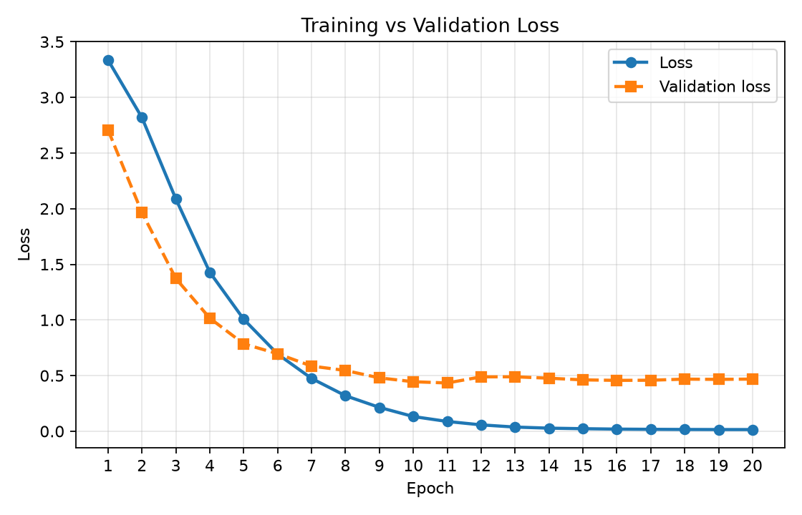
Beyond the test split, the model was checked on hand-written evaluation
sets (reports/intent_audit/). An audit found that 30 of the 164 audit
sentences and 1 of the 41 hold-out sentences had also been in the training
data; they were removed and the model retrained - the current model. Its
results with no leakage:
| Set | Sentences | Accuracy | By language |
|---|---|---|---|
| Audit | 164 | 0.927 | English 0.944, Roman Urdu 0.936, Urdu 0.903, mixed 2 of 3 |
| Hold-out | 41 | 0.878 | English 1.00, Roman Urdu 0.913, Urdu 4 of 6, mixed 1 of 2 |
| Challenge (look-alikes) | 29 | 1.000 | Roman Urdu |
The previous model scored 0.916 accuracy on its own, different 333-sentence test split; that figure is not comparable with the current 0.898.
| mBERT label | Handled as | Example from the training data |
|---|---|---|
| book_appointment | book | mujhy dctr se check karwana tha |
| cancel_appointment | cancel | meri apointment khatam kar dein |
| reschedule_appointment | reschedule | Move my appointment to Friday at 12 PM |
| change_date | reschedule (or edit a booking draft) | Mujhe doosri date chahiye |
| change_time | reschedule (or edit a booking draft) | mujhe doosra time de dein |
| change_doctor | reschedule (or edit a booking draft) | Please switch me to another doctor |
| appointment_status | check appointment | Kya mera appointment lag gaya hai |
| appointment_confirmation | confirm | Wo date theek hai, confirm karein |
| check_availability | doctor availability | Doctor kab available hote hain |
| doctor_unavailable | doctor availability | Is Dr Fatima out of station |
| find_doctor | doctor information (list) | Mujhe dermatologist chahiye |
| doctor_information | doctor information | Dr Ayesha kaun hain |
| doctor_fee | doctor information (fee) | Dr Usman ki fees kya hai |
| doctor_qualifications | doctor information (qualification) | Dr Fatima ki degree kya hai |
| doctor_specialization | doctor information (specialisation) | What kind of doctor is Dr Sara |
| clinic_location | clinic information (address) | Kis ilaqe mein hai clinic |
| clinic_timing | clinic information (timing) | What are your working hours |
| clinic_closed | clinic information (closed days) | Kya clinic aaj band hai |
| emergency | emergency - escalate | Mere abbu gir gaye hain, abhi madad chahiye |
| greeting | greeting | Aap kaise hain |
| goodbye | goodbye - end the conversation | Theek hai, khuda hafiz |
| thank_you | thanks | Waqt dene ka shukriya |
| help | help | Kuch samajh nahi aa raha |
| confirm | yes | theek hai kar do |
| deny | no | No that is wrong |
| repeat_information | repeat the last reply | Maaf kijiye, sun nahi paya |
| unclear_request | unknown - clarify | Chhorein koi baat nahi |
| provide_patient_name | caller gives information | ji mera naam Usman hai |
| provide_patient_phone | caller gives information | My mobile is 0300 1234567 |
| provide_patient_age | caller gives information | Meri umar 60 saal hai |
| provide_patient_gender | caller gives information | Yeh khatoon ke liye hai |
The 31 labels map onto 17 canonical intents the Dialogue Manager acts on
(INTENT_MAPPING in config.py), so the model can be retrained with
different labels without touching the dialogue logic.
mBERT answers “what does the caller want?”; the Dialogue Manager
(dialog_manager/) answers “what should happen next?”. It is
deterministic and never invents a fact: availability, fees, addresses and
appointment IDs all come from the database.
Each session (one call or chat) keeps: the patient, the current intent and
named dialogue state (idle, booking, confirmation, cancel, reschedule, status,
doctor information, clarification), the slots collected so far, the slot being
asked for, a pending intent (a question parked until a missing detail
arrives), whether a yes/no confirmation is awaited, the reply language, and the
last 40 turns. Sessions expire after 15 minutes of inactivity. Every message,
with its intent and confidence, is logged to Firestore
(conversation_sessions, conversation_messages).
| Task | Required slots (asked in this order) |
|---|---|
| Book | doctor, date, time (patient name and phone optional) |
| Cancel | appointment ID - or the caller's single upcoming appointment when the caller is known |
| Reschedule | appointment ID (same rule), new date, new time |
| Check appointment | none - found from the caller |
| Doctor availability | doctor, date |
Entities are extracted by deterministic rules (validators.py), because
“kal 4 baje” must always mean the same date and time: doctor names and their
aliases in English and Urdu script; aaj, kal, parson, weekdays in
English, Roman Urdu and Urdu, and calendar dates; times such as “4 baje”,
“shaam 5”, “5 PM” and Urdu digits and number words, with a bare 1-8
o'clock read as afternoon (clinic hours); appointment IDs; phone numbers;
names. All dates are resolved in Asia/Karachi time.
change_date/change_time/change_doctor
edit the draft instead of starting a reschedule (which would ask for an
appointment ID the caller does not have - seen in a live test).change_date.Real turns from the current system (text input, in-memory clinic) - the model's label on its own is often wrong for a one-word answer, and the context carries the conversation:
| System asked | Caller said | mBERT alone | What happened |
|---|---|---|---|
| Which day? | kal | change_date 0.34 | date = tomorrow → asks the time |
| What time? | 5 baje | unclear_request 0.89 | time = 17:00 → asks to confirm |
| Appointment ID? | APT123 | provide_patient_phone 0.97 | ID taken → continues the reschedule |
| Which day? | Friday | greeting 0.95 | date = Friday → asks the time |
| Which day? (booking Dr Ahmed) | nahi Dr Asim | doctor_unavailable 0.67 | doctor corrected to Dr Asim → asks the day |
| Band | Policy |
|---|---|
| High (≥ 0.80) | Act on the intent. |
| Medium (0.60-0.80) | Believe it only if the conversation supports it: a task is already open, or the sentence contains a doctor, date, time or appointment ID. Otherwise ask one short question - “Ji, aap appointment cancel karna chahte hain?” - instead of acting on a 0.65 guess. |
| Low (< 0.60) | Never act; the intent is unknown and the caller is asked what they meant - unless the corroboration rule below applies. |
| Switching task | Abandoning a task in progress needs ≥ 0.75. |
The thresholds are configurable (HIGH_CONFIDENCE, CONFIDENCE_THRESHOLD,
INTENT_SWITCH_THRESHOLD). Three rules run on the router's output:
thank_you 0.97. The caller is told to call emergency services or go to
the nearest hospital.book_appointment only when the sentence has a subject (doctor,
appointment), an action (jana, milna, chahiye…) and no competing vocabulary
(fee, cancel, change, emergency…). It was written for “Mje docter ke pas jana
h”, which an earlier model classified as change_doctor 0.41. The current
model classifies it as book_appointment with confidence 1.00; the rule
remains as a safety net.The only code that creates or changes appointments (appointment_backend/).
The voice assistant, the Doctor Dashboard and the SuperAdmin Dashboard all go
through it. Every operation returns an OperationResult: success, the data
the reply needs, or a precise error code.
| Operation | What it does |
|---|---|
| Book | Runs the gates below and writes a confirmed appointment with an ID such as APT48D0EE. |
| Cancel | Changes the status to cancelled (records are never deleted); checks the appointment exists, belongs to the caller and is still live. |
| Reschedule | Same checks, then the new date and time through the date, time and slot gates; the record is updated in place with status rescheduled. (Unlike a new booking, this write is not inside a transaction - see section 17.) |
| Check | A caller's upcoming appointments, or “could this be booked?” without writing. |
| Availability | Free slots for a doctor and date: the doctor's schedule for that weekday (20-minute slots in the demo schedule, 16:00-20:00, Monday-Saturday) minus leave and live appointments. |
| Alternatives | When a slot is taken, the three free slots nearest the requested time - “5:00 PM is already taken. Dr Asim Raza has 4:20 PM, 4:40 PM or 5:20 PM free.” |
| Complete | Marks a consultation finished (dashboards). |
| Doctor leave | Blocks a date and cancels every live appointment on it (8.4). |
HH:MM.reserve_slot): if someone took it between the check and the write, the
booking fails with alternatives instead of creating a double booking.Error codes: patient_not_found, doctor_not_found, clinic_not_found,
invalid_date, date_in_past, invalid_time, duplicate_appointment,
doctor_not_working, doctor_unavailable, outside_working_hours,
slot_unavailable, appointment_not_found, not_your_appointment,
already_cancelled, already_completed, backend_unavailable.
| Status | Meaning |
|---|---|
pending | Defined for unconfirmed bookings; the current flows confirm before writing, so new bookings are confirmed |
confirmed | Booked |
rescheduled | Live, moved to a new time |
completed | Consultation finished |
cancelled | Cancelled by the patient or the clinic |
cancelled_by_doctor | Cancelled because the doctor blocked the day |
Pending, confirmed and rescheduled appointments hold their slot; the others free it.
Doctor (own dashboard) or SuperAdmin blocks a date, with a reason
↓ the SuperAdmin first sees a preview: who will be affected
Date recorded in doctor_unavailability - the doctor can no longer be booked that day
↓
Every live appointment of that doctor on that date → status cancelled_by_doctor
↓ (records kept, with the reason and the time)
One notification per patient written to notifications:
"Dr Hamza Ali is not available on 2026-10-01, so your appointment at 17:00
has been cancelled (Medical conference). Please call again to book another date."
↓
Shown on the doctor's Notifications page
NotificationSender
interface exists, and NOTIFICATION_PROVIDER names a provider, but no
provider is implemented, so the API reports the notifications as “queued only”.Firestore is the single source of truth. It was chosen because it needs no server to run, is reachable from Python through the official Admin SDK, supports transactions (used to prevent double bookings) and lets the voice assistant and the dashboards share one live database. Without credentials the system falls back to an in-memory database with the same interface, used by the automated tests so they never touch the live project.
| Collection | Contents |
|---|---|
clinics | The one clinic: name, address, city, phone |
doctors | Name, specialisation, qualification, fee, experience, phone, aliases (for recognising the name in speech), active/archived flags, clinic |
schedules | Working hours per doctor and weekday: sessions, slot length |
doctor_unavailability | Blocked dates (leave) with reason |
patients | Patient ID, name, phone |
appointments | Appointment ID, patient, doctor, clinic, date, time, status, cancellation details |
notifications | Messages queued for patients (doctor leave, clinic cancellations), read flags |
conversation_sessions | One record per conversation |
conversation_messages | Every turn, with intent and confidence |
dashboard_accounts | Sign-in accounts: username, role, PBKDF2 password hash |
Relationships are by ID: an appointment carries patient_id, doctor_id
and clinic_id; a schedule and a leave record carry doctor_id. The
demo data (firebase/seed_data.py) is one clinic, four doctors, their
Monday-Saturday schedules and one patient; it is written only to the in-memory
database or when run explicitly.
The dashboards were measured to be slow on the live project (sign-in to a
usable doctor dashboard: 7.3 s) and reworked (api/data.py,
docs/PERFORMANCE.md):
count() aggregations.firestore.indexes.json. They have not been deployed to the live project; until they are, each query that needs one falls back to a simpler query plus filtering, with the same result.Measured on the live project (median of three runs): doctor sign-in to a usable dashboard 7.3 s → 1.2 s; the 30-second refresh 3.4 s → 0.57 s (4 requests → 1); administrator overview 5.7 s → 1.7 s; every page once 40.8 s → 12.0 s. On a simulated clinic of 20,000 appointments the same pages read 9,240 documents instead of 157,429. From this machine one Firestore round trip takes about 0.55 s, and for long stretches about 2.35 s - network latency outside the application.
A local model, llama3.2 (3B) served by Ollama, words the reply. It is
not the source of truth: it cannot read or write the database, and it
runs after the Dialogue Manager and the backend have finished. Settings:
temperature 0.2, at most 200 generated tokens, JSON output, 30 s timeout,
address http://127.0.0.1:11434.
| Use | Input | Check |
|---|---|---|
| Judge - turns with a database result (book, cancel, reschedule, alternatives, availability, errors) | The caller's words, intent, confidence, slots and the backend result as JSON, the reply language, and worked examples. The model returns a sentence and a decision. | validate_llm_response: against the backend result |
Rewording - every other reply, in voice mode (VOICE_OLLAMA_EVERY_TURN) | The Dialogue Manager's own sentence and the reply language, with examples in that language only. | validate_rewording: against that sentence |
The typed-text pipeline uses the judge only; slot questions there come from templates, because a 3B model's Roman Urdu cannot be checked without a reference.
The prompt asks the model not to invent facts; the validator enforces it. A generated sentence is rejected when:
On rejection, on a missing or empty answer, or if Ollama is down, the Dialogue Manager's template for the turn is spoken - in English, Roman Urdu or Urdu. The call never waits on or breaks because of the model.
| Check (29 September 2026) | Result |
|---|---|
| Judge: 21 live calls (7 scenarios × 3 languages) | wording used 3 times; 18 fell back to the template (9 no usable sentence, 6 rejected by the validator, 3 other); median 1.11 s, max 6.23 s |
| Rewording: two runs of 21 conversation turns | 15 and 13 accepted, 3 and 5 rejected (an invented “Friday”, “kal” turned into “today”, a slot dropped, an added “Nahin”), 3 judge turns; median 0.66-0.79 s per reply |
Stage timing (measure_performance.py) | judge median 0.78 s (3 calls), rewording median 0.49 s (5 calls) |
The validator checks facts, not grammar: an accepted rewording can still be
clumsy (“Bilkul. Aap kis din convenient rahega?”). A larger local model
would help (section 17). Before 29 September every Ollama request also waited
about 2.1 s because the address was localhost, which Windows first tries
over IPv6; the default is now 127.0.0.1 (measured 2,236-2,316 ms against
191 ms for the same request).
One web application (Dashboard/, served by the API at /ui) with two
roles. It is plain HTML, CSS and JavaScript with no framework and no build step,
works in light and dark themes and on a phone-width screen, and refreshes its
counters every 30 seconds. The screenshots in this chapter were taken from the
running system on 29 September 2026 with the demo clinic and invented demo
patients; all figures on them are computed from those database records.
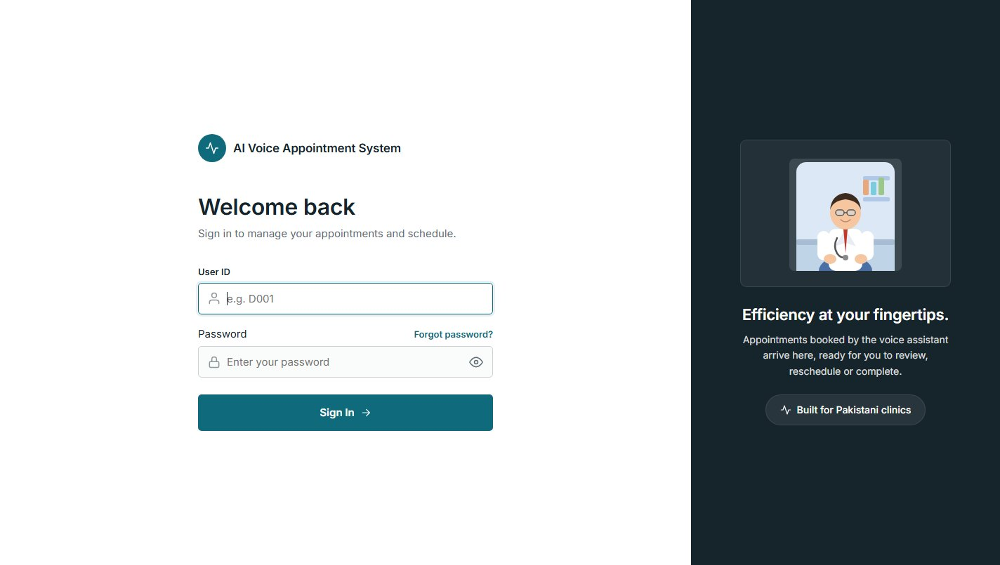
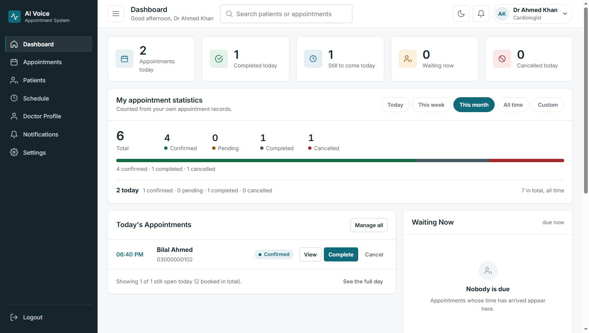
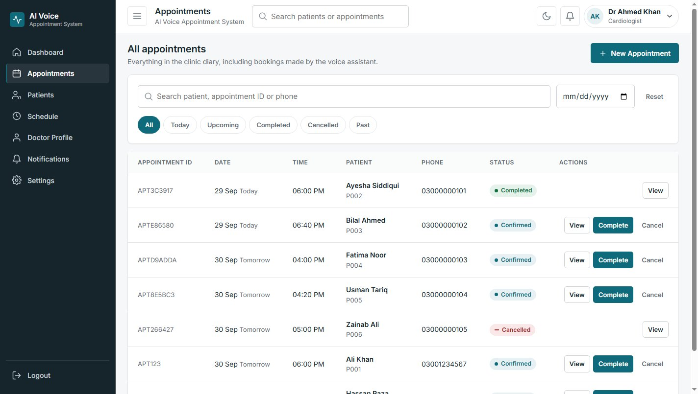
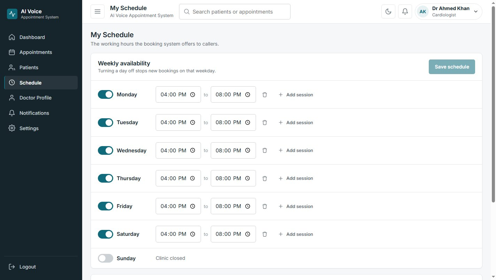
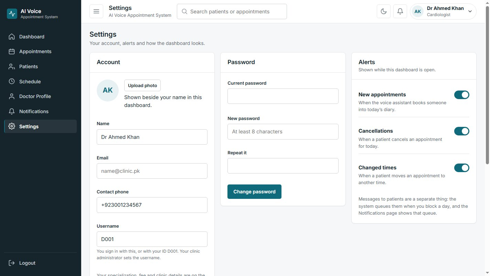
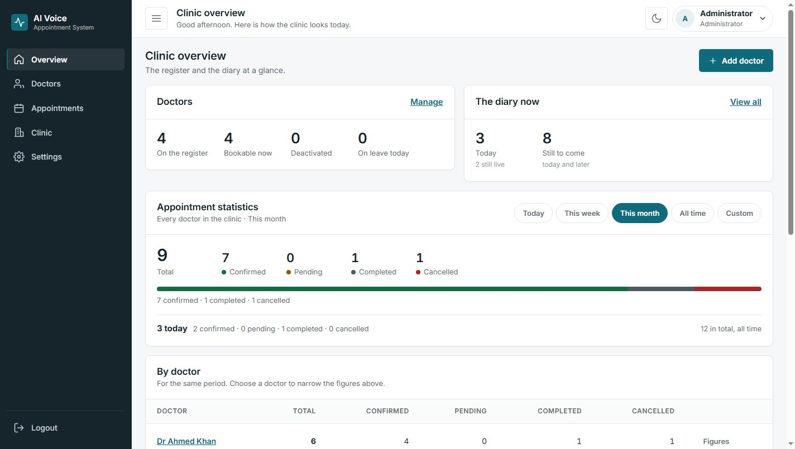
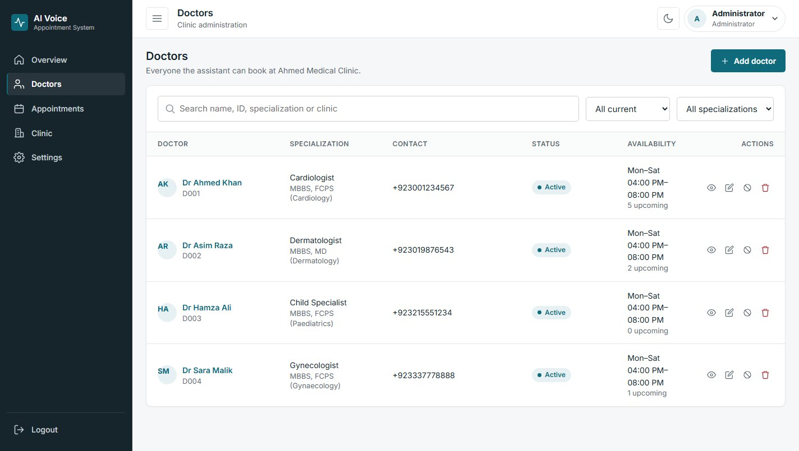
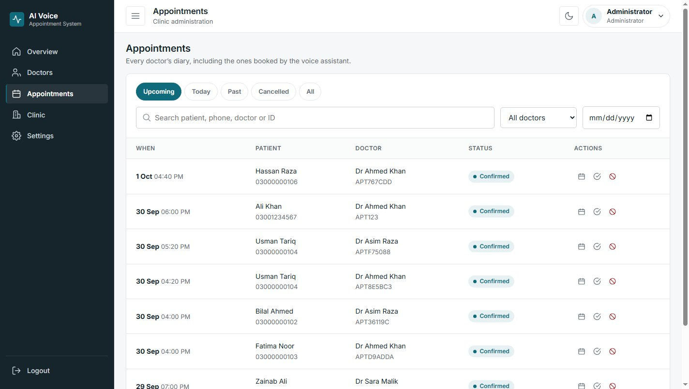
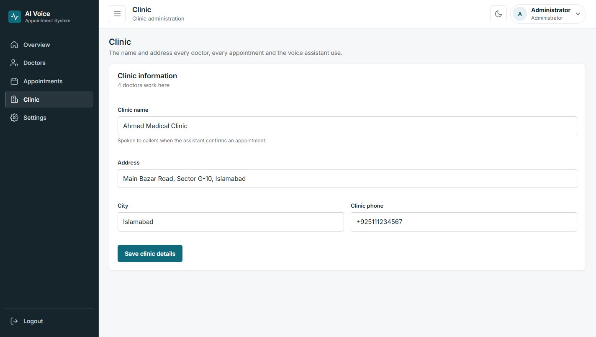
Enforced on the server, not by hiding buttons: /dashboard/* routes need a
doctor's session and read the doctor ID from that session, never from the
request; /admin/* routes need the administrator's session; each role is
refused by the other's routes (tests/test_admin_api.py, TestRoles).
| Action | SuperAdmin | Doctor |
|---|---|---|
| Add, edit, deactivate, remove, restore doctors | Yes | No |
| Change a doctor's username | Yes | No - not even their own |
| Change a doctor's password | Yes, any doctor | Own only, with the current password |
| Change own password | Yes | Yes |
| Clinic name, address, city, phone | Yes | No (403 clinic_readonly) |
| Working hours and leave | Any doctor | Own only |
| Appointments | All; cancel, move, complete | Own only; book, cancel, move, complete |
| Statistics | Clinic-wide and per doctor | Own only |
| Doctor profile (name, fee, specialisation…) | Any doctor | Own profile |
| Another doctor's data | Yes (administration) | No |
| Open a doctor's private dashboard | No - roles do not overlap | Own only |
Counted from the appointment records the caller may see - a doctor's own, or
the whole clinic's for the administrator - never from sample values
(appointment_backend/statistics.py). Figures: total, confirmed, pending,
completed, cancelled (including cancelled_by_doctor, also reported on its
own) and rescheduled, so the parts add up to the total exactly once. Periods:
today, this week, this month, all time and a custom range; all-time totals use
Firestore count() aggregations. The administrator also gets the same
figures per doctor.
| Area | What the code does |
|---|---|
| Secrets | All credentials come from .env or the environment. .env, the Firebase service-account file and every JSON file not explicitly listed are ignored by Git, as are audio recordings and private voice-session reports. .env.example holds names only. |
| ElevenLabs key | Server-side only; sent to ElevenLabs in the xi-api-key header, never in a URL, a response, an event, a log line, the dashboard or Git (checked on 29 September 2026: in no changed file and not in the Git history). |
| Firebase credentials | Read by the API only; the browser never talks to Firebase and holds no credential or database address. |
| Authentication | Sign-in returns a random opaque token; every protected route needs Authorization: Bearer. Sessions last 12 hours; the browser keeps the token in sessionStorage, so it is gone when the tab closes. |
| Passwords | PBKDF2-HMAC-SHA256, 120,000 iterations, 16-byte random salt, in dashboard_accounts; never returned by the API; at least 8 characters; changing one needs the current one and ends the account's other sessions. A deployment with no password configured refuses sign-in rather than being open. |
| Roles | Doctor and superadmin, enforced per route (section 11.3). |
| Call endpoint | /voice/call needs VOICE_GATEWAY_TOKEN; with none set it accepts only local connections. |
| Logging | Speech logs record transcript length, not words (words only at DEBUG level). The websockets library's debug output, which contains request headers, is suppressed. |
| Checks | tests/test_security.py scans the code, the reports and this PDF for private keys and service-account addresses and checks the secret files are ignored; scripts/build_report.py refuses to publish a PDF that contains credential material. |
/dialog/*, /voice/message) are unauthenticated because they are meant
to sit behind a telephony layer on a private network.python scripts/run_tests.py, run on 29 September 2026 with the trained model
present. The offline tests use the in-memory database and simulated external
services (ElevenLabs, Ollama, sound card) and never touch Firestore.
| Module | Tests | Passed | Failed | Skipped | Status |
|---|---|---|---|---|---|
| Intent detection (mBERT, router, Roman Urdu, audit sets) | 45 | 45 | 0 | 0 | Pass |
| Dialogue (Dialogue Manager, entities, naturalness, scenarios, emergency net) | 112 | 112 | 0 | 0 | Pass |
| Appointment backend | 61 | 61 | 0 | 0 | Pass |
| Firebase (repository, services) | 40 | 31 | 0 | 9 | Pass live tests skipped |
| Ollama judge, validator, languages | 54 | 51 | 0 | 3 | Pass live tests skipped |
| End-to-end (pipeline, HTTP API) | 25 | 25 | 0 | 0 | Pass |
| Doctor Dashboard API | 28 | 27 | 0 | 1 | Pass |
| SuperAdmin API (doctors, credentials, clinic, leave, roles) | 70 | 70 | 0 | 0 | Pass |
| Statistics | 24 | 24 | 0 | 0 | Pass |
| Database performance budgets | 31 | 31 | 0 | 0 | Pass |
| STT (realtime, batch, keyterms) | 13 | 13 | 0 | 0 | Pass |
| TTS | 7 | 7 | 0 | 0 | Pass |
| Voice calls end to end, audio, known confusions | 35 | 35 | 0 | 0 | Pass |
| Microphone voice mode | 39 | 39 | 0 | 0 | Pass |
| Security | 11 | 11 | 0 | 0 | Pass |
| Total | 595 | 582 | 0 | 13 | No failures |
Twelve of the 13 skipped tests need --live (the real Firestore project and
Ollama); one dashboard test skips itself because the backend refuses the
set-up it needs (two same-day bookings for one patient). Without the
trained model (a fresh clone) the suite gives 589 tests, 534 passed, 55
skipped, 0 failed: the tests that need the real model skip themselves. The
dialogue tests use a scripted stand-in classifier on purpose, so they test the
dialogue logic on its own.
tests/browser/) - signing in as each role, every page, adding and editing
doctors, credentials, the clinic record, leave with its preview, appointment
actions, statistics, the phone-width layout, and no JavaScript error:
Doctor Dashboard 59 of 59, SuperAdmin 51 of 51 (29 September 2026).tests/test_ollama_live.py, 3 tests passed (29 September 2026).Run through the real pipeline (mBERT, Dialogue Manager, backend) on the in-memory demo clinic, replies following the caller's language, on 29 September 2026. “Kal” is 30 September.
| Case | Caller said | mBERT | System reply (action) |
|---|---|---|---|
| Critical sentence | Mje docter ke pas jana h | book_appointment 1.00 | “Which doctor would you like to see?” (ask_for_doctor) - see note |
| Booking | Mujhe Dr Asim se appointment chahiye → kal → 5 baje → haan kar dein | book 1.00 … confirm 0.99 | “Ji. Dr Asim Raza ke paas kal shaam 5 baje ka slot khali hai. Book kar doon?” → “Done ji. Aap ki appointment … confirm ho gayi hai.” (created) |
| Slot taken | I want to book Dr Asim tomorrow at 5 PM | book_appointment 1.00 | “5:00 PM is already taken. Dr Asim Raza has 4:20 PM, 4:40 PM or 5:20 PM free - which suits?” |
| Booking, Urdu script | مجھے ڈاکٹر سارہ سے کل چار بجے اپائنٹمنٹ چاہیے → ہاں | book 1.00, confirm 0.99 | “جی ہو گئی۔ آپ کی اپائنٹمنٹ Dr Sara Malik کے ساتھ کل شام 4 بجے کنفرم ہو گئی ہے۔” (created) |
| Doctor fee | Dr Ahmed ki fee kitni hai? | doctor_fee 0.99 | “Dr Ahmed Khan ki consultation fee 2000 rupay hai.” (from the database) |
| Availability | Dr Hamza kal available hain? | check_availability 0.99 | “kal Dr Hamza Ali ke paas shaam 4 baje, shaam 4:20 baje ya shaam 4:40 baje available hai…” |
| Appointment lookup | Meri appointment kab hai? | appointment_status 0.96 | “Aap ki appointment Dr Ahmed Khan ke saath kal shaam 6 baje par hai.” |
| Rescheduling | I want to reschedule my appointment → APT123 → Friday → 5 PM → yes | reschedule 0.99 … | “Done, I have moved it to Friday, 2 October at 5:00 PM.” (moved) |
| Cancellation | Meri appointment cancel kar dein → APT123 → haan | cancel 0.99 … confirm 0.99 | “Ji, aap ki Jumma 2 tareekh wali appointment Dr Ahmed Khan ke saath cancel kar di hai.” |
| Correction | Dr Ahmed se appointment chahiye → nahi Dr Asim → parson → 4 baje | … | “Acha. Dr Asim Raza ke paas parso shaam 4 baje ka slot khali hai. Book kar doon?” |
| Emergency | Mere abbu ko seene mein dard hai, saans nahi aa rahi | emergency 0.96 | “Yeh emergency lag rahi hai. Foran emergency services ko call karein…” (escalate) |
| Goodbye | Shukriya, Allah Hafiz | thank_you 0.98 | “Khuda hafiz, apna khayal rakhiye ga.” (conversation ended) |
Note on the critical sentence. The intent is right, and a live
voice test with ElevenLabs gave the same intent. With the reply language on
automatic, the language detector did not recognise “Mje docter ke pas jana
h” as Roman Urdu and answered in English. RESPONSE_LANGUAGE=roman_urdu
fixes the reply language for a deployment; the detection itself is a
limitation (section 17).
Also covered by the automated tests: doctor leave cancelling that day's appointments and queuing one notification per patient; the SuperAdmin editing a doctor, changing credentials and the clinic; a doctor refused when changing the clinic, another doctor's data or a username; and whole voice conversations (booking, cancellation, rescheduling, fee, availability, goodbye, a caller interrupting, a dropped connection, a failing TTS service) through the real pipeline.
| Problem | Root cause | Fix | Status |
|---|---|---|---|
“Mje docter ke pas jana h” → change_doctor 0.41 → “please repeat” | Informal spelling; an unsure model sent to “unknown” | Booking corroboration rule; Roman Urdu spelling variants added to training | Fixed: now book_appointment 1.00 |
“Bohot khoon beh raha hai” → thank_you 0.97 | Model error on an unseen emergency | Emergency safety net on danger phrases | Fixed, tested |
| 30 audit and 1 hold-out sentence were also in the training data | Merging several datasets | Removed; group-aware split; retrained | Fixed; honest scores |
| “dr ahmad” during a booking → asked for an appointment ID, repeatedly | change_doctor treated as a reschedule | Draft-edit labels edit the booking in progress | Fixed, tested |
| “nahi” to “appointment ID?” looped | No path for a caller without an ID | Use the caller's own appointment(s) | Fixed |
| A fee question during a booking was ignored | The doctor's name was taken as a booking slot | Answer the side question, then resume | Fixed |
| LLM said “kal 5 baje” for an appointment 8 days away | Validator checked times and IDs only | Spoken-date and reply-language checks | Fixed |
| Doctor sign-in took 7.3 s | Sequential reads of whole collections | Narrow, batched, parallel, counted and paged reads; cache | 1.2 s |
| Calls lost a turn after a long agent reply | ElevenLabs closes a session after ~15 s without audio | Keep-alive silence; re-send the sentence in progress | Fixed, tested |
| “ہاں، کر دیں” (yes) not taken as yes | Urdu comma not stripped; mBERT read it as change_date | Strip Urdu punctuation; a yes to a pending booking stays a yes | Fixed, tested |
| Agent's reply cut off mid-sentence | A late partial transcript treated as the caller interrupting | Interrupt only when the caller is also making sound | Fixed; test fails without it |
| The API key appeared in a debug log | websockets logs request headers at DEBUG | Logger held at INFO | Fixed; test enforces |
| First caller after a restart waited 10.3 s | mBERT loaded on first use | Load at start-up in the background | Fixed |
| Every Ollama request took 2.1 s longer | localhost tried over IPv6 first on Windows | Default address 127.0.0.1 | Judge median 4.12 s → 1.11 s |
| Loading mBERT could break other imports | The intent module's own config briefly replaced the project's, process-wide | Load the intent module under private names | Fixed; found by the test suite |
| TTS changed “4 baje” to “5 baje” | Flash v2.5 model | Chose eleven_v3_conversational by measurement | Fixed |
Measured on the development machine (GTX 1660 SUPER, network in Pakistan);
sources: reports/performance.json, reports/ollama_live.json,
reports/voice/, docs/PERFORMANCE.md, docs/VOICE.md.
| Stage | Measured | Date |
|---|---|---|
| STT: caller stops → final transcript | 1.5-1.8 s (0.8 s of it the end-of-sentence pause); session connect ≈ 0.8 s | 29 Sep |
| mBERT inference | median 7.5 ms, p95 8.7 ms (60 sentences, GPU); first call including model load 17.9 s | 29 Sep |
| Dialogue Manager logic | median 0.31 ms | 29 Sep |
| Whole text turn, no LLM, in-memory database | median 7.9 ms | 29 Sep |
| Backend booking, in-memory | median 0.09 ms | 29 Sep |
| Firestore, live, read-only | get a doctor: median 2.40 s (5 calls); availability: median 4.07 s (5 calls) - one round trip is 0.55 s or ≈ 2.35 s from this network | 29 Sep |
| Ollama judge | median 1.11 s over 21 calls (max 6.23 s) | 29 Sep |
| Ollama rewording (voice mode) | median 0.49 s (5 calls); per-conversation medians 0.86-0.97 s in the live microphone runs | 29 Sep |
| TTS: request → first audio | median 824 ms (eleven_v3_conversational), 818 ms (Flash v2.5); 0.65-0.70 s inside calls | 29 Sep |
| Caller stops → agent speaks, calls (judge off) | median 2.52 s, 20 turns (2.30-2.98 s) | 29 Sep |
| Caller stops → agent speaks, microphone mode (Ollama every reply) | median 3.05 s, 18 turns; booking confirmations 4.2-7.9 s (the judge) | 29 Sep |
| Voice turn against live Firestore | Not measured - the voice measurements used the in-memory clinic | - |
| Doctor sign-in to a usable dashboard | 1.2 s (was 7.3 s) | 28-29 Sep |
| Dashboard 30-second refresh | 0.57 s, 1 request (was 3.4 s, 4 requests) | 28-29 Sep |
| Administrator overview | 1.7 s (was 5.7 s) | 28-29 Sep |
| Telephony | Not measured - not implemented | - |
Every stage of a voice turn is shown live in voice_app.py --debug and saved
with --report.
Patient: "Mujhe Dr Asim se appointment chahiye"
→ STT → mBERT book_appointment (1.00) → Dialogue Manager: doctor = Dr Asim Raza; date missing
→ "Bilkul. Kis din aana convenient rahega?"
Patient: "kal" → date = tomorrow; time missing → "Kis waqt aana chahenge?"
Patient: "5 baje" → time = 17:00 → Backend: availability check (no write)
→ "Ji. Dr Asim Raza ke paas kal shaam 5 baje ka slot khali hai. Book kar doon?"
Patient: "haan kar dein" → Backend: gates + transactional write → Firestore: appointment confirmed
→ reply worded by Ollama, checked by the validator (or the template)
→ "Done ji. Aap ki appointment Dr Asim Raza ke saath kal shaam 5 baje confirm ho gayi hai.
Appointment ID … hai." → TTS → patient; visible in both dashboards
Patient: "Meri appointment cancel kar dein" → cancel_appointment (0.99) → the caller's appointment is found → "… Dr Ahmed Khan ke saath Jumma 2 tareekh shaam 5 baje hai. Cancel kar doon?" Patient: "haan" → Backend: exists, belongs to the caller, still live → status cancelled → "Ji, aap ki Jumma 2 tareekh wali appointment Dr Ahmed Khan ke saath cancel kar di hai."
Patient: "I want to reschedule my appointment" → reschedule_appointment (0.99) → appointment ID (or the caller's appointment) → new date → new time → Backend: slot free? → "Dr Ahmed Khan is free Friday, 2 October at 5:00 PM. Shall I move your appointment?" Patient: "yes" → status rescheduled, new date and time → "Done, I have moved it to Friday, 2 October at 5:00 PM."
SuperAdmin → Doctors → Dr Hamza Ali → Leave → 1 October, "Medical conference" → the preview lists the 2 affected patients → confirm → 2 appointments cancelled_by_doctor, 2 notifications queued (not sent)
AI-voice-appointment-system/ ├── api/ FastAPI: main.py (app, dialogue routes, /ui), auth.py, dashboard.py, │ admin.py, data.py (dashboard reads), voice_ws.py (/voice/call) ├── appointment_backend/ booking, cancellation, rescheduling, availability, validation, │ statistics, public appointment routes ├── dialog_manager/ Dialogue Manager, intent router, entities, slots, sessions, fallbacks ├── ollama_judge/ Ollama client, prompts, languages and templates, response validator ├── speech/ ElevenLabs STT and TTS, audio, call orchestration, microphone, speaker ├── firebase/ Firestore repository, one service per collection, cache, seed data ├── intent_detection/ mBERT: src/ (preprocess, train, evaluate, inference), data/, │ outputs/ (metrics, figures), models/ (trained weights, not in Git) ├── Dashboard/ the Doctor and SuperAdmin web app (HTML, CSS, JavaScript) ├── Data/ raw intent datasets ├── docs/ this report (PDF and its HTML source), VOICE.md, PERFORMANCE.md ├── reports/ evaluation, test, performance and voice measurement outputs ├── scripts/ run_tests, build_report, voice_check, voice_benchmark, │ measure_performance, evaluate_intents, firestore_indexes, … ├── tests/ unittest suite; browser/ (headless-Chrome checks) ├── config.py every setting, from environment variables ├── voice_app.py microphone voice mode ├── voice_pipeline.py text console for the full pipeline ├── firestore.indexes.json, firebase.json, requirements.txt, .env.example, README.md
| Requirement | Needed for |
|---|---|
| Python 3.12 | everything (tested 3.12.10); pip install -r requirements.txt |
| The trained mBERT model | intent detection (712 MB, not in Git; train it with intent_detection/src/train.py or copy it in) |
| NVIDIA GPU (optional) | training (strongly recommended) and fast inference; the system also runs on a CPU (not measured) |
| Firebase project with Firestore (optional) | persistent data; without it an in-memory database with demo data is used |
Ollama with llama3.2 (optional) | reply wording; without it templates are used (OLLAMA_ENABLED=false) |
| ElevenLabs account, API key and voice ID | speech only; typed text works without it |
| Microphone and speaker or headphones | microphone mode (PortAudio is bundled with sounddevice on Windows) |
| Node.js 22+ and Google Chrome | browser tests and rebuilding this PDF only |
| Asterisk | not needed - telephony is not implemented |
Start the API with uvicorn api.main:app --port 8000 and open
http://127.0.0.1:8000/ui/; talk by voice with python voice_app.py. The
README gives every step.
requirements.txt)| Package | Minimum | Used for |
|---|---|---|
| torch | 2.4 | running and training mBERT |
| transformers | 4.44 | mBERT model and tokenizer |
| pandas, numpy, scikit-learn, matplotlib | 2.2 / 1.26 / 1.5 / 3.8 | dataset preparation, metrics, training plots |
| firebase-admin, google-cloud-firestore | 6.5 / 2.16 | Firestore |
| fastapi, uvicorn[standard], pydantic | 0.115 / 0.30 / 2.8 | HTTP API |
| httpx | 0.27 | Ollama and ElevenLabs TTS client; API tests |
| websockets | 12 | ElevenLabs realtime speech-to-text |
| sounddevice | 0.4 | microphone and speaker |
| python-dotenv | 1.0 | loading .env |
| pypdf | 4.0 | checking this PDF for secrets |
There is no package.json: the dashboard has no JavaScript dependencies and
the browser tests use only Node's built-in modules. The official ElevenLabs SDK
is not used (its install fails on the development machine's Windows path
limit); the documented REST and WebSocket APIs are called directly.
voice_pipeline.py) re-writes the demo doctors, schedules and patients into the configured database when it starts; against Firestore that overwrites dashboard edits to those records./voice/call endpoint, and tests over a real phone line.qwen2.5:7b, which fits the 6 GB GPU) for better Roman Urdu wording.NotificationSender interface.The project delivers a working AI appointment assistant for a single clinic. A patient can book, check, reschedule and cancel an appointment by speaking English, Urdu, Roman Urdu or a mix, through the computer's microphone and speaker today and through a telephone bridge once one is connected to the existing call endpoint. The same conversation works over text.
The main AI contributions are a fine-tuned mBERT classifier for 31 intents in mixed-script Pakistani speech (accuracy 0.898, macro-F1 0.836 on clean held-out data), a context-aware Dialogue Manager that keeps a conversation on track even when single words are misclassified, and a design in which a local language model improves the wording of replies while a validator guarantees that every fact the patient hears comes from the database. Appointment automation is deterministic and safe: validation gates, transactional booking, alternatives when a slot is taken, and a doctor-leave cascade that cancels and records notifications for every affected patient.
Doctors manage their own day, and the administrator manages the doctors, their credentials and leave, every appointment and the clinic itself, with role rules enforced on the server and statistics computed from real records. The system is tested by 595 automated tests and 110 browser checks with no failures.
It is ready for demonstration and supervised trials. Before real patients can rely on it by telephone, it needs the Asterisk/SIP bridge, testing with real callers, delivery of patient notifications and production-grade authentication.
| Route | Purpose |
|---|---|
| Conversation (for a telephony layer on a private network) | |
POST /dialog/message, POST /voice/message | one caller turn as text → reply and full turn details |
POST /dialog/reset, POST /dialog/end, GET /dialog/transcript/{id} | session control and transcript |
POST /intent/predict | mBERT classification only |
WS /voice/call | a whole voice call (audio in, audio and events out); token required |
| Appointments (Appointment Backend) | |
POST /appointments/book, /cancel, /reschedule, /check | operations; /check writes nothing |
GET /appointments/{id}; patient and doctor listings; availability; doctor unavailability | reads |
| Sign-in | |
POST /auth/login, /auth/logout, /auth/password; GET /auth/session | sessions and own password |
| Doctor Dashboard (role doctor, own data only) | |
GET /dashboard/summary, /statistics | counters, today, statistics |
/dashboard/appointments (+ /cancel, /reschedule, /complete) | own appointments |
/dashboard/patients, /availability, /profile, /schedule, /leave, /notifications | patients, free slots, profile, hours, leave, messages |
| SuperAdmin (role superadmin) | |
GET /admin/summary, /statistics | clinic overview and statistics |
/admin/doctors (+ /status, /restore, DELETE) | register: add, edit, activate/deactivate, archive, restore |
/admin/doctors/{id}/credentials | a doctor's username and password |
/admin/doctors/{id}/schedule, /leave, /leave/preview, /appointments, /availability | a doctor's hours, leave, diary |
/admin/appointments (+ /cancel, /reschedule, /complete) | every appointment |
GET/PATCH /admin/clinic, POST /admin/clinic/consolidate | the one clinic |
| Other | |
GET /health, GET /doctors, /ui, /docs | status, public doctor list, dashboard, interactive API documentation |
Set in .env (template: .env.example). Names and defaults only - no
values of secrets appear in this report.
| Group | Variables (default) |
|---|---|
| Firebase | FIREBASE_PROJECT_ID, FIREBASE_CLIENT_EMAIL, FIREBASE_PRIVATE_KEY or FIREBASE_CREDENTIALS_FILE; USE_LOCAL_DB |
| Clinic | CLINIC_ID (C001), TIMEZONE (Asia/Karachi), APPOINTMENT_ID_PREFIX (APT), NOTIFICATION_PROVIDER |
| Intent and dialogue | CONFIDENCE_THRESHOLD (0.60), HIGH_CONFIDENCE (0.80), INTENT_SWITCH_THRESHOLD (0.75), EMERGENCY_SAFETY_NET (true), SESSION_TIMEOUT_MINUTES (15), RESPONSE_LANGUAGE (auto), INTENT_MODULE_DIR |
| Ollama | OLLAMA_BASE_URL (http://127.0.0.1:11434), OLLAMA_MODEL (llama3.2), OLLAMA_TIMEOUT (30), OLLAMA_TEMPERATURE (0.2), OLLAMA_MAX_TOKENS (200), OLLAMA_ENABLED (true), OLLAMA_TRANSLATE (false) |
| Dashboards | DASHBOARD_PASSWORD, DASHBOARD_PASSWORD_<DOCTORID>, DASHBOARD_SESSION_HOURS (12), DASHBOARD_ORIGINS, SUPERADMIN_ID (ADMIN), SUPERADMIN_PASSWORD - starting passwords, replaced by hashed ones once changed |
| Speech | ELEVENLABS_API_KEY, ELEVENLABS_VOICE_ID, ELEVENLABS_STT_MODEL (scribe_v2_realtime), ELEVENLABS_STT_LANGUAGE (ur), ELEVENLABS_STT_AUDIO_FORMAT (ulaw_8000), ELEVENLABS_STT_SILENCE_SECS (0.8), ELEVENLABS_STT_KEYTERMS (false), ELEVENLABS_TTS_MODEL (eleven_v3_conversational), ELEVENLABS_TTS_OUTPUT_FORMAT (ulaw_8000), ELEVENLABS_TIMEOUT (15), ELEVENLABS_MAX_RETRIES (1), ELEVENLABS_ENABLE_LOGGING (true), VOICE_GATEWAY_TOKEN |
| Microphone mode | MICROPHONE_DEVICE, SPEAKER_DEVICE (system default), VOICE_INPUT_MODE (vad), VOICE_DEBUG (false), VOICE_MIC_FORMAT (pcm_16000), VOICE_TTS_OUTPUT_FORMAT (pcm_22050), VOICE_BARGE_IN (false), VOICE_OLLAMA_EVERY_TURN (true) |
| Development | LOG_LEVEL (INFO), PERF_DEBUG |